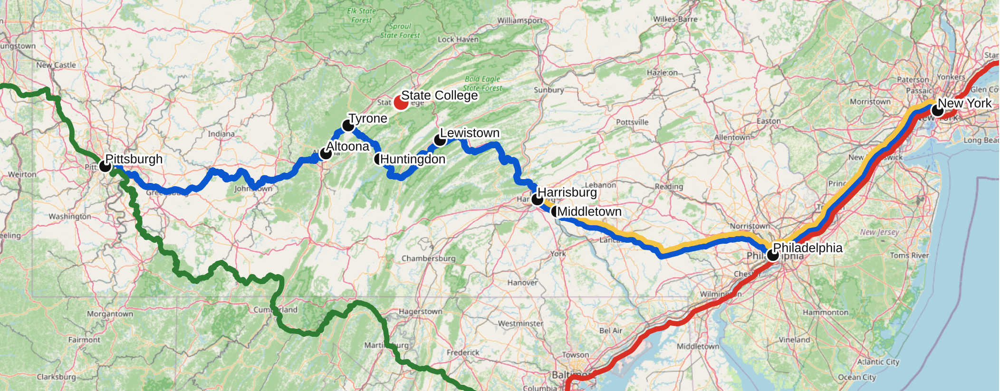
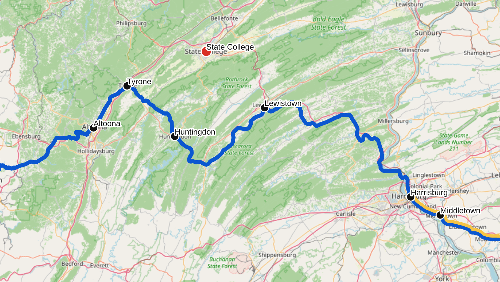

Getting to State College and Penn State
State College can be a bit difficult to reach by any means other than a long drive or an expensive flight. Happily, several other options are available: intercity bus service remains fairly robust, and Amtrak trains are not too far away. This page is an attempt to aggregate the various options for getting to and from town. Please report any errors, omissions, updates, or suggestions on GitHub.
By bus
There are currently five companies selling regular or semi-regular intercity bus service to and from State College: Fullington Trailways, Greyhound, Flixbus, Agee Bus (often known as “Gotobus”, after the platform where its tickets are available), and OurBus. Between them there are a remarkable number of options, but the information is fragmented and some schedules vary by day. The tables below try to list physical, one-seat buses, rather than every itinerary that Greyhound/Flixbus/Omio/etc. will sell you. This distinction matters: for example, Greyhound sells a New York ticket on the 1:50 PM departure, but that trip requires a transfer; the physical 1:50 PM coach is the daily Philadelphia bus. I audited the current fall schedule on October 2, 2026, using a full week of bookable departures and cross-checking Fullington’s own timetable. The weekday patterns below are therefore worth treating as a current snapshot rather than eternal truth. Check the operator’s booking site before relying on a particular departure.
Regular one-seat departures from State College:
| Departure | Operator | Through destination | Arrival | Runs | Important intermediate stops / notes |
|---|---|---|---|---|---|
| 1:55 AM | Flixbus | New York | 6:30 AM | M Tu W F Sa Su | From SCE; no Thursday trip in the audited week |
| 6:00 AM | Fullington | Pittsburgh / PIT | 11:00 AM / 11:40 AM | Daily | Philipsburg, Clearfield, DuBois, Punxsutawney, Indiana, Monroeville |
| 9:00 AM | Fullington | New York | 1:45 PM | Daily | Direct; New York stop is Area X |
| 9:15 AM | Fullington | Philadelphia | 1:45 PM | Daily | Harrisburg 11:00 AM, King of Prussia 1:00 PM |
| 9:45 AM | Fullington | Wilkes-Barre | 1:10 PM | Daily | Lock Haven 10:40 AM, Williamsport 11:15 AM |
| 10:25 AM | Flixbus | New York | 4:25 PM | M Tu Th F Sa Su | From SCE; Harrisburg 12:10 PM |
| 12:35 PM | Greyhound | New York | 6:45 PM | M Th F Sa Su | Harrisburg about 2:20 PM, then Allentown and Newark (city) |
| 1:25 PM | Greyhound | Pittsburgh | 6:10 PM | W Th F Sa Su | Downtown stop; on M/Tu the corresponding westbound departure is later |
| 1:50 PM | Greyhound | Philadelphia | 6:15 PM | Daily | Harrisburg 3:40 PM; direct to Philadelphia, not direct to New York |
| 3:40 PM | Flixbus | New York | 10:20 PM | M Tu F Sa Su | From SCE; Harrisburg 5:25 PM, Philadelphia 8:15 PM |
| 4:25 PM | Flixbus | Pittsburgh | 7:25 PM | W Th F Sa Su | From SCE |
| 6:25 PM | Greyhound | Pittsburgh | 11:10 PM | M Tu | Replaces the 1:25/7:35 pattern on these days |
| 6:55 PM | Flixbus | Pittsburgh | 9:30 PM | Th F Sa Su | From SCE |
| 7:20 PM | Fullington | Pittsburgh | 9:50 PM | Daily | Downtown-to-downtown express |
| 7:35 PM | Greyhound | Pittsburgh | 10:20 PM | W Th F Sa Su | Downtown stop |
| 8:25 PM | Flixbus | Pittsburgh | 11:25 PM | M Tu | From SCE; later weekday variant of the westbound Flix service |
The Pittsburgh schedule has more day-to-day variation than the eastern routes. This is one place where I would always check the live booking calendar; late-evening Flixbus and Greyhound departures in particular move around as schedules change.
Regular one-seat arrivals in State College:
| Arrival | Operator | Through origin | Departure | Runs | Important intermediate stops / notes |
|---|---|---|---|---|---|
| 1:50 AM | Flixbus | New York | 9:30 PM | M W Th F Sa Su | Arrives at SCE; no Tuesday trip in the audited pattern |
| 8:45 AM | Fullington | Pittsburgh | 6:15 AM | Daily | Downtown-to-downtown; continues toward New York |
| 10:20 AM | Flixbus | Pittsburgh | 7:30 AM | M Tu Th F Sa Su | Arrives at SCE |
| 12:20 PM | Greyhound | Pittsburgh | 9:35 AM | M Th F Sa Su | Downtown stop |
| 1:15 PM | Greyhound | Philadelphia | 9:00 AM | Daily | Harrisburg about 11:25 AM |
| 1:40 PM | Greyhound | Pittsburgh | 9:10 AM | Daily | Slower west-to-east Greyhound through service |
| 3:35 PM | Flixbus | Pittsburgh | 1:00 PM | M Tu F Sa Su | Arrives at SCE |
| 4:20 PM | Flixbus | New York | 10:45 AM | M W Th F Sa Su | Arrives at SCE |
| 5:15 PM | Fullington | Wilkes-Barre | 1:36 PM | Daily | Williamsport 3:25 PM, Lock Haven 3:55 PM; SCE 4:55 PM |
| 6:30 PM | Fullington | Philadelphia | 2:00 PM | Daily | King of Prussia and Harrisburg |
| 6:50 PM | Flixbus | New York | 12:00 PM | M Th F Sa Su | Philadelphia about 2:15 PM; arrives at SCE |
| 7:05 PM | Fullington | New York | 2:05 PM | Daily | Departs Area X |
| 7:20 PM | Greyhound | New York | 1:00 PM | W Th F Sa Su | Downtown stop |
| 8:10 PM | Fullington | Pittsburgh / PIT | 3:30 PM / 2:50 PM | Daily | DuBois, Clearfield, Philipsburg |
There are also several genuinely useful date-dependent services that I have not forced into those weekday tables. Agee’s current booking calendar shows a 7:30 AM State College departure serving Newark Liberty Airport (11:00 AM), Newark city (11:10 AM), New York (11:30 AM), and LGA (12:15 PM) on selected dates, plus other occasional departures; the usual New York return is 5:00 PM–9:25 PM. OurBus is currently selling a 2:30 PM State College departure to Harrisburg (4:15 PM) and onward destinations on selected dates–in the week I checked, the Harrisburg run was available on Friday–and advertises the same 2:30 PM window for New York and Philadelphia service. Fullington also adds special Penn State/weekend trips; see below.
The most stable part of the list is Fullington’s own daily network. Greyhound and Flixbus are much more prone to changing the time or day pattern, and their websites also mix direct buses with connecting itineraries. This is why the tables above say what the physical coach is doing rather than copying the number of “daily trips” advertised by a booking engine.
Fullington and Greyhound use the downtown bus station at 152 N. Atherton. The direct Flixbus-operated trips in the tables above use State College Regional Airport (SCE); Flixbus’s booking site also sells partner-carrier itineraries from downtown, so the company name on the booking page is not enough to identify your stop. OurBus uses the downtown bus station for its current New York service. Agee uses a North Atherton curbside stop; the exact address has changed in its listings, so again, follow the ticket. Fullington, Greyhound, and Flixbus operate standard passenger coaches, with a bathroom on board; Agee Bus runs, at least sometimes, smaller 10-seater vans, which are unmarked on the outside.
Be warned that Fullington’s direct New York route still uses Area X, not a normal Port Authority gate. This is under the 41st Street overpass between 8th and 9th Avenues. Check your ticket, because other tickets sold by Fullington may involve a connecting carrier that uses the Port Authority itself.
Tickets can be booked at the websites of the respective companies. Flixbus is the corporate parent of Greyhound and the two share a good deal of inventory. Fullington trips are also cross-listed by some other booking systems, but I would book a Fullington-operated trip directly through Fullington when possible. Agee tickets are sold through gotobus.com; OurBus tickets are sold through OurBus.
Fullington Express and tour buses
In addition to the regular daily routes, Fullington operates occasional express buses aimed at Penn State/weekend travel. These are very useful if the dates happen to line up. The Big Apple Express is alive and well in 2026: one common schedule leaves State College at 4:15 PM and reaches New York at 9:15 PM, with the return leaving New York at 10:00 PM and reaching State College at 2:45 AM. Fullington also advertises one-day “New York City Do As You Please” trips and other city excursions. These are not daily service, so consult the express/tour calendar rather than the normal bus timetable.
PSU break buses
Many additional bus services are available around the times of Penn State breaks (Thanksgiving, Winter, and Spring), to help students get home. All of these are restricted to current PSU students.
- College Break Buses runs routes to many locations in CT, MA, MD, NJ, NY, PA, and VA
- Some New England Alumni Associations charter buses to Newton, MA and Danbury and Manchester, CT
- The Metro Washington DC Alumni Association runs buses to Bethesda, MD.
- Do you know about others? Let me know!
OurBus
OurBus is no longer just a hypothetical crowd-sourced route. As of fall 2026 it advertises a 2:30 PM State College–New York trip from the downtown bus terminal to Hudson Yards, with a corresponding 2:30 PM return, and its booking system also shows State College service to places such as Harrisburg and Philadelphia on selected dates. Some routes are seasonal or demand-sensitive and extra weekend trips may be added, so this is another case where the live booking calendar matters more than a printed timetable.
Carpooling
While the ridesharing bulletin boards are a thing of the past, you might still be able to find someone to share a ride, especially around PSU breaks. Some options:
- RideOn is a ride-matching app from PSU.
- There is a Facebook group for finding rides that appears to be fairly active.
- I have heard that various international student groups have WhatsApp groups that are actively used to arrange transport from major airports. I don’t know where to find them – ask a friend?
- Faculty and staff seem to have occasional success on the L-NEW-FACULTY-LIST mailing list.
A note on Megabus
For many years, Megabus ran affordable and frequent routes to State College. However, Megabus ceased to operate buses locally following a 2024 bankruptcy. The Megabus brand and website are now owned by a holding company, the Renco Group, which continues to sell tickets at megabus.com. These are just Fullington tickets, and I am not aware of any compelling reason to book through megabus.com instead of directly through Fullington.
By train
State College does not have a train station, so you will need to get to another city to catch the train – the closest ones, in Tyrone and Lewistown, are each about a 35-minute drive away. There are several Amtrak routes useful when traveling from State College, of which two actually run through Central PA:
- the Pennsylvanian, which passes closest to State College, offers service from Pittsburgh to NYC via Philadelphia. It currently has one daily train in each direction; a second daily round trip is scheduled to begin in mid-November 2026.
- the Keystone Service, which offers much more frequent service between Harrisburg and Philadelphia/New York (14 trains per day each way)
- the Northeast Corridor is by far Amtrak’s busiest route, reaching from Boston to Virginia. Riders on the Pennsylvanian can connect to NEC trains in either Philadelphia or New York.
- the Capitol Limited travels from Chicago to Washington DC, cutting through the southwest corner of Pennsylvania with a stop in Pittsburgh. If you want to go west of Pittsburgh, you’ll start on the Capitol Limited. (At time of writing, the Capitol Limited has been combined with the Silver Star into a single extended route from Chicago to Miami, the Floridian. This is supposed to be a temporary situation.)
- (PA also has the Lakeshore Limited, which travels from Chicago to Boston with a stop in Erie, but there’s no practical way to connect to it from State College.)

If you’re headed east, you have basically two options: either catch the train in Lewistown (35 minutes’ drive; but there is only one daily train), or make the longer trip to Harrisburg (90 minutes from here, but with more or less hourly service to NYC). If you’re headed west, the sensible option is generally to catch the train in Tyrone (35 minutes). Of course you could catch an eastbound train in Tyrone if you like, but you will spend more than an hour on the train getting to Lewistown, and you should’ve just gone there in the first place.
It is possible to get to and from Tyrone and Lewistown using Uber or Lyft. The ride costs about $65. My experience is that there are more Ubers in the Tyrone/Altoona area; in Lewistown you run the risk of being stranded for a couple hours. (This is based on a pretty small sample size, please share your experience if you have more.) CATA and the county continue to explore options for more reliable transportation from State College to these stations, but for now nothing is available.
Since the routes are a bit meandering in the vicinity of State College – the tracks roughly follow the Juniata – a map of the nearby stations may clarify the options:

There are a handful of other stations that might make sense, depending on your precise situation. Huntingdon and Altoona stations are relatively nearby. Of the four stations within an hour’s drive, only Altoona is staffed, so if you want to check bags on the Pennsylvanian, you need to go there or Harrisburg. Another option is Middletown station, which is slightly past Harrisburg, and combines frequent eastbound service with bountiful and cheap long-term parking; this can be a good option for a trip to the NEC.
The world-famous Horseshoe Curve lies a few miles west of the Altoona station, so you won’t go around it on any eastbound trip from the Centre Region unless you board all the way in Johnstown.
Current timetables for the Pennsylvanian – including only the big cities and the local stations – are as follows:
| Eastbound | Station | Westbound |
|---|---|---|
| 7:30 AM | Pittsburgh | 8:05 PM |
| 10:03 AM | Altoona | 5:16 PM |
| 10:21 AM | Tyrone | 4:51 PM |
| 10:48 AM | Huntingdon | 4:24 PM |
| 11:28 AM | Lewistown | 3:47 PM |
| 1:05 PM | Harrisburg | 2:36 PM |
| 3:24 PM | Philadelphia | 12:41 PM |
| 4:50 PM | New York | 10:52 AM |
A final option is the “Thruway bus” service operated by Amtrak. You can buy a ticket directly from “State College” (station code: STC) on amtrak.com. What you receive is a single booking that puts you on bus from downtown State College to a train station, where you transfer to the next train. The bus is actually one of the Greyhound or Fullington routes enumerated above, not a special bus operated by Amtrak. If you’re headed east, the transfer takes place in Harrisburg, where the bus and train stations are the first and second floors of the same building, so transferring is very simple. If you’re headed west, you take a quick bus trip to Altoona and then have a 3+ hour layover, which is less attractive. Booking both tickets through Amtrak entitles you to a replacement ticket in case you miss the connection. There aren’t too many buses from Harrisburg to State College, but schedules are currently arranged so that even if you miss your scheduled bus, there is at least one more running later in the day.
Options for specific destinations
New York
The current options to reach New York are the following. Different routes use different stops in both State College and New York; pay attention when booking.
Outbound to New York
| Operator | Departure | Arrival | Runs | Notes |
|---|---|---|---|---|
| Flixbus | 1:55 AM | 6:30 AM | M Tu W F Sa Su | Direct from SCE |
| Agee Bus | varies | varies | Selected dates | The current 7:30 AM run reaches NYC about 11:30 AM; check GotoBus |
| Fullington | 9:00 AM | 1:45 PM | Daily | Direct from downtown to Area X |
| Flixbus | 10:25 AM | 4:25 PM | M Tu Th F Sa Su | Direct from SCE |
| Amtrak | 11:28 AM | 4:50 PM | Daily | Departure from Lewistown |
| Greyhound | 12:35 PM | 6:45 PM | M Th F Sa Su | Direct from downtown |
| Amtrak Thruway | 2:00 PM | 8:12 PM | Daily | Bus-to-train transfer in Harrisburg |
| OurBus | 2:30 PM | about 9:00 PM | Selected dates | Hudson Yards; check the live calendar |
| Flixbus | 3:40 PM | 10:20 PM | M Tu F Sa Su | Direct from SCE via Harrisburg and Philadelphia |
| Fullington Express | 4:15 PM | 9:15 PM | Selected dates | Big Apple Express; see the express calendar |
The 1:50 PM Greyhound is deliberately absent from this table. Greyhound will sell you a State College–New York itinerary beginning with that bus, but the physical coach terminates in Philadelphia and the New York trip requires a transfer.
Inbound to State College
| Operator | Departure | Arrival | Runs | Notes |
|---|---|---|---|---|
| Amtrak Thruway | 7:17 AM | 1:15 PM | Daily | Train-to-bus transfer in Harrisburg |
| Flixbus | 10:45 AM | 4:20 PM | M W Th F Sa Su | Direct to SCE |
| Amtrak | 10:52 AM | 3:45 PM | Daily | Arrival in Lewistown |
| Flixbus | 12:00 PM | 6:50 PM | M Th F Sa Su | Direct to SCE, via Philadelphia |
| Greyhound | 1:00 PM | 7:20 PM | W Th F Sa Su | Direct to downtown |
| Fullington | 2:05 PM | 7:05 PM | Daily | Direct to downtown from Area X |
| OurBus | 2:30 PM | about 9:00 PM | Selected dates | Hudson Yards; check the live calendar |
| Agee Bus | 5:00 PM | 9:25 PM | Selected dates | Check GotoBus calendar |
| Flixbus | 9:30 PM | 1:50 AM | M W Th F Sa Su | Direct to SCE; arrives next morning |
| Fullington Express | 10:00 PM | 2:45 AM | Selected dates | Big Apple Express; arrives next morning |
On days when the 1:00 PM Greyhound operates, it reaches Harrisburg at about 5:30 PM and State College at 7:20 PM. Other direct Harrisburg–State College buses run earlier in the day, so it is often possible to make your own train+bus connection from New York or Philadelphia later than Amtrak’s protected Thruway itinerary allows. Such a connection is at your own risk, so check the live bus inventory for the particular date rather than assuming the 5:30 PM trip runs every day.
Philadelphia
There are several direct buses each way, in addition to Amtrak from Lewistown and Amtrak’s protected train+Thruway connection through Harrisburg.
Outbound from State College:
| Operator | Departure | Arrival | Runs |
|---|---|---|---|
| Fullington | 9:15 AM | 1:45 PM | Daily |
| Greyhound | 1:50 PM | 6:15 PM | Daily |
| OurBus | 2:30 PM | 6:45 PM | Selected dates |
| Flixbus | 3:40 PM | 8:15 PM | M Tu F Sa Su |
Inbound from Philadelphia:
| Operator | Departure | Arrival | Runs |
|---|---|---|---|
| Greyhound | 9:00 AM | 1:15 PM | Daily |
| Fullington | 2:00 PM | 6:30 PM | Daily |
| Flixbus | 2:15 PM | 6:50 PM | M Th F Sa Su |
| OurBus | varies | about 4 hours later | Selected dates |
Pittsburgh
Pittsburgh has an unusually large number of direct buses, but Greyhound and Flixbus change their departure times by day. The current fall pattern is:
Outbound from State College:
| Operator | Departure | Arrival | Runs |
|---|---|---|---|
| Fullington | 6:00 AM | 11:00 AM | Daily; continues to PIT at 11:40 AM |
| Greyhound | 1:25 PM | 6:10 PM | W Th F Sa Su |
| Flixbus | 4:25 PM | 7:25 PM | W Th F Sa Su |
| Greyhound | 6:25 PM | 11:10 PM | M Tu |
| Flixbus | 6:55 PM | 9:30 PM | Th F Sa Su |
| Fullington | 7:20 PM | 9:50 PM | Daily |
| Greyhound | 7:35 PM | 10:20 PM | W Th F Sa Su |
| Flixbus | 8:25 PM | 11:25 PM | M Tu |
Inbound from Pittsburgh:
| Operator | Departure | Arrival | Runs |
|---|---|---|---|
| Fullington | 6:15 AM | 8:45 AM | Daily |
| Flixbus | 7:30 AM | 10:20 AM | M Tu Th F Sa Su |
| Greyhound | 9:10 AM | 1:40 PM | Daily |
| Greyhound | 9:35 AM | 12:20 PM | M Th F Sa Su |
| Flixbus | 1:00 PM | 3:35 PM | M Tu F Sa Su |
| Fullington | 3:30 PM | 8:10 PM | Daily; starts at PIT at 2:50 PM |
You can also take the Pennsylvanian to/from Tyrone. Amtrak sells a Thruway itinerary from State College to Pittsburgh as well, but the westbound version involves a long layover in Altoona. (If you’re crazy enough to do this, the Altoona Railroaders Memorial Museum is right by the station and is a nice way to spend the layover.)
Washington DC / Baltimore
This is still an awkward destination by scheduled bus, but there are now more possibilities. Greyhound/Flix itineraries can be constructed with a transfer in Harrisburg (and sometimes Baltimore on the return). OurBus is also advertising direct State College–Washington and State College–Baltimore service on selected high-demand dates, including a 2:30 PM departure around Penn State breaks. Check the live OurBus calendar before planning around it; unlike the core Fullington routes, I would not assume it runs every day.
Chicago and points west:
There are two realistic options to get to Chicago, which is the hub for Amtrak’s major routes across the midwest and to the west coast. (Well, OK, I guess you could fly to Chicago.)
- Flixbus currently sells two State College–Chicago trips per day; the published route page lists the first departure at 1:55 AM and the last at 7:35 PM, with the fastest itinerary about 10.5 hours. The exact routing and State College stop can vary, so check the ticket rather than relying on an old printed timetable.
-
An Amtrak train leaves Pittsburgh at 11:59 PM and arrives in Chicago at
8:45 AM the next morning. Most of the long-distance routes from Chicago
leave in the early afternoon, so there is a comfortable time for
connection. To reach Pittsburgh, you could…
- Catch the westbound train in Tyrone at 4:51 PM, arriving in Pittsburgh at 8:05 PM, which leaves you with a 4-hour layover until the next train. Although the Pittsburgh station and its immediate environs are not particularly charming at this hour, you can store your luggage at the counter in the station and spend a couple hours in the city.
- Use one of the several daily bus routes to Pittsburgh to arrive a little earlier, and have a little extra time in the city. Note: these can’t be booked through Amtrak, so if you miss the connection you’ll be out of luck. For example, a Greyhound leaves State College at 1:25 PM, arriving in Pittsburgh at 6:10 PM. Weekday Pirates games are usually at 6:40 PM, so you can ditch your bags at the train station and make it to PNC in time for the first pitch, before coming back to the train station for the late westbound departure.
- Use the Amtrak Thruway service, which has a long connection in Altoona; see Pittsburgh above.
Airports
SCE
The local airport is the State College Regional Airport (SCE), located about five miles north of town. There is no ordinary local fixed-route bus service there.- The easy option is to take an Uber or Lyft (~$25)
- If the timing works, you can catch one of the Fullington routes that hits the airport on the way in/out of town. Currently buses leave the airport for downtown at 5:30 AM, 9:15 AM, and 4:55 PM.
- The enterprising traveler could walk from the airport (in non-CATA Benner Township) into Patton Twp. He would then be in the Centre Area North Expansion Zone of CATAGO, and eligible for a ride into an area served by regular CATA buses, probably either Medlar Field or Hills Plaza. This requires booking a day ahead. (I haven’t done this yet; please send a report if you are successful. I am told that CATA won’t pick you up at the border, and I’m not sure exactly how far they require you to walk to get a ride.)
JFK/LGA
There is no dependable regular bus from State College directly to JFK or LGA. Agee and OurBus occasionally list airport trips on selected high-demand dates, so it is worth checking if the timing happens to work, but I would not build a normal itinerary around them. Otherwise use one of the New York buses above and then continue by subway/bus (and the AirTrain for JFK).
EWR
The Newark stop on the Flixbus New York routes audited above is Newark Penn Station, not Newark Liberty Airport itself, so don’t confuse the two. Agee Bus does provide a genuinely direct EWR option on selected dates: in the week checked, its 7:30 AM State College run reached EWR at 11:00 AM before continuing to Newark city, New York, and LGA. Check GotoBus for the date you need. EWR is also an Amtrak station served by many Northeast Corridor trains, so another reliable option is to reach Philadelphia and continue by train.
PHL
Normally the simplest public-transport option is SEPTA from the airport to 30th Street and then one of the State College connections above. OurBus is advertising some direct State College–PHL airport trips beginning around the 2026 Penn State holiday travel periods; check its live calendar if your dates are flexible.
PIT
One daily Fullington route each way offers direct service to PIT. The early morning Fullington route leaving State College at 6:00 AM continues to PIT after serving the main bus station. The Fullington route leaving Pittsburgh at 3:30 PM leaves PIT at 2:50 PM.
IAD/BWI
It’s probably theoretically possible if you land early in the day, but I cannot in good conscience recommend trying to get here by bus or train from IAD or BWI.